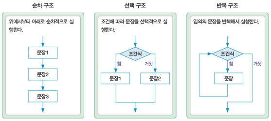
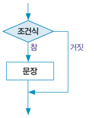
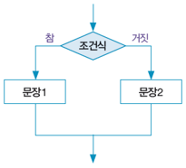
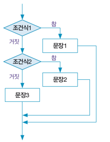

# 무작위로 1~100 사이의 두 정수를 생성한 후, 큰 수부터 작은 수 순으로 출력
import random
a = random.randint(1, 100)
b = random.randint(1, 100)
if a<b:
a, b = b, a
print(a, b)80 54
if 조건식:
문장
:이 위치하고, 참인 경우 실행될 문장은 반드시 들여쓰기(indentation)해야 함
# 무작위로 1~100 사이의 두 정수를 생성한 후, 큰 수부터 작은 수 순으로 출력
import random
a = random.randint(1, 100)
b = random.randint(1, 100)
if a<b:
a, b = b, a
print(a, b)80 54if 조건식:
문장1
else:
문장2
:이 위치하고, else 오른쪽에는 조건식 없이 :이 위치함
# 무작위로 1~100 사이의 정수를 생성한 후, 짝수인지 홀수인지 판단
import random
a = random.randint(1, 100)
if a % 2 == 0:
print(f'{a}는 짝수입니다')
else:
print(f'{a}는 홀수입니다')24는 짝수입니다if 조건식1:
문장1
elif 조건식2:
문장2
else:
문장3
:이 위치하고, 문장1, 문장2, 문장3은 반드시 들여쓰기해야 함